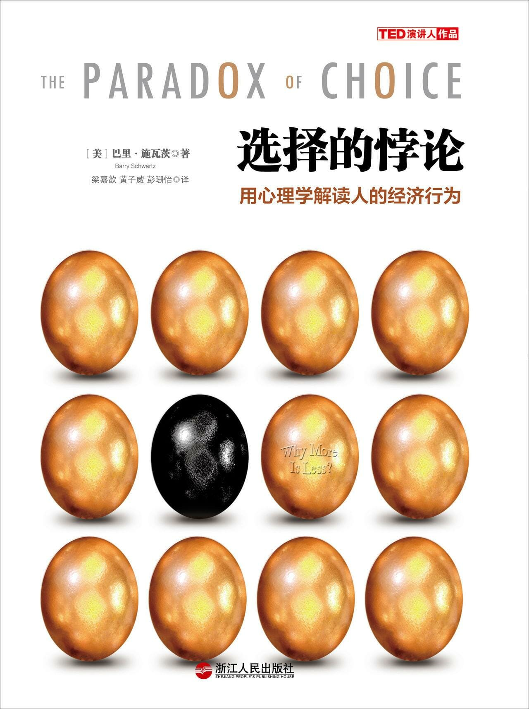

注：【】部分为笔者心得，非原文摘抄。
- 【在同时具备很多选择的情况下，商品价格越低（错误选择导致的损失越小），人们越容易作出选择。】
- 选择过多会让最终被选中的“幸运儿”魅力大减，导致满足感更低。
- 对病人自主权的尊重并不是把做决定的责任全部推到病人身上。
- 人们永远都放松不下来，无法享受自己已经拥有的东西，因为他们要为下一个将要到来的好机会时刻准备着。
- 【主动屏蔽一些不必要或重复的选择项，有助于保持专注最核心的价值。】
- 大多数明智的选择都包含以下几个步骤：
- 确定你的目标；
- 评估目标的重要性；
- 列出可能的选择；
- 评估哪个选项最能达到你的目标；
- 选出最佳选项；
- 根据选择的效果调整你的目标以及各个因素的重要性，以便下一次作出更明智的选择。
- 峰终定律：人们对过去体验的记忆由两种因素决定，事情达到极限（最好或最坏）时 的感受，以及事情结束后的感受。
- 可获得性启发式：人们的判断推理过程常常受到可获得的记忆影响，倾向于认为容易想起的事件比不容易想起的事件更常见。
- 和促销商品相比，原价商品就是一个锚。
- 框架效应：同一个问题的两种逻辑意义相似的说法会导致不同的决策判断，当消费者认为某一价格带来的是“损失”而不是“收益”时，他们对价格就非常敏感。
- 边际效用递减律：当人们连续消费同一种物品或服务时，其总效用虽然在增加，但边际效用，即每单位物品或服务带来的效用增加量却在递减。
- 当决定自己的收益时，人们倾向于规避风险，都有风险厌恶症；而当人们面对损失时，一个个都变得极具冒险精神，都是寻求风险的冒险家。
- 禀赋效应：一旦人们拥有了某样东西，它在人们心目中的价值就会超越它原来的价值，因为放弃它就意味着损失。
- 沉没成本：由过去的决策导致的、不能由现在或将来的决策改变的成本。
- 要作出明智的选择，第一步就是确定一个清晰的目标。
- 最大化倾向高的人生活满意度更低、更不快乐、更不乐观而且更有抑郁倾向。
- 在大多数时候，自己的感受才是评价一个决策好坏的关键。
- 真正的最大化者应该限定搜集信息的数量，一旦发现信息量达到临界点，就停止搜索，作出英明的决策。
- 完美主义者和最大化者都希望做到最好，尽管两者都有非常高的标准，但完美主义者可能从来不认为自己可以达到这个标准，最大化者则认为这个最高标准是可以企及的。
- 最大化和满足的倾向都有“专属领域”。
- 自由与自主对我们的主观幸福感至关重要。
- 个体的选择自由可以确保社会商品以最有效的方式生产并分配。——亚当·斯密
- 除了工具价值外，选择还有一种同样重要的价值，表达价值。
- 选择是我们向全世界表明自己身份和喜好的一种途径。
- 只有当我们真的可以自由选择的时候，这些选择才真正具有表达功能。
- 习得性无助：当人或动物接连不断地遭受挫折，就会丧失控制感，感到自己对一切都无能为力，陷入一种无助的心理状态。
- 随着选择和控制的体验越发广泛而深入，人们对选择和控制的期望也在增加。
- 更多的选择并不意味着更多的控制。
- 钱没有我们想象中那么重要。一旦人均财富脱离了贫困线，达到小康水平，国家财富的增加对国民幸福感的影响就不会很大。
- 与快乐最相关的因素就是亲密的社会关系。
- 社会关系在很多方面实际上减少了自由、选择和自主权。
- 【认识一个人需要时间！】
- 时间就是终极的稀缺资源。
- 如果生活的方方面面都要作出选择，生活就会比我们想象中更糟糕。
- 不得不作选择这件事本身就会影响我们的感知，决定越重要，这种取舍对最终结果的满意度的影响就越大。
- 每一个决定都包含机会成本。
- 机会成本：因为作出一个选择而丧失的可能获得的最大利益。
- 考虑机会成本可能并不会影响最终决定，却可以让你对这个决定的意义有更明确的认识。
- 强迫人们在选择时权衡得失，会让他们觉得自己优柔寡断，甚至会不高兴。
- 需要反复权衡的问题会让人们更难作出决定，所以他们就会推迟决定；而简单的货比三家能让决策变得更轻松。当只提供一个选择时，人们的反应就介于前面二者之间。
- 如果人们面临的选择需要进行权衡才能决定，而且选项相互之间冲突的话，所有选项的吸引力都会明显降低。
- 权衡带来的消极情绪不仅会使选择的满意度下降，同时也会影响选择本身的质量。
- 消极情绪会缩小注意力范围。
- 消极情绪让我们分心，诱导我们关注情绪因素而不是选择本身。
- 当人们被问到喜欢某物的原因时，可能会很难用语言表达出来。相反，一些无关紧要的因素恰恰是最容易表达的。
- 【如果我能明确地告诉你所有我喜欢你的点，那么我就不是真的喜欢你，至少，我无法保证能喜欢你很长时间或者不移情别恋。】
- 有太多选择时会发生的事情就是，你要对发生的事情负责。
- 随随便便的态度正是导致婚姻失败的罪魁祸首。
- 忽略偏见：人们最容易接受由于自己的忽略或不作为导致的损失，而不愿意接受自己的行为导致的同等损失。
- 越是由自己做主的事情，事与愿违的时候就越会感到后悔。
- 【用“比上不足”来鼓励自己不断进步；用“比下有余”来舒缓内心的压力。】
- 【只要问心无愧，即使结果不尽如人意，也没有必要为自己作出的决定感到后悔。】
- 考虑到一个选择包含了多种复杂的可能性，实际上没有任何一个选项可以在各方面都达到最佳水平。
- 当我们习惯了某个东西，就会认为它是理所当然的。
- 人们对快乐的追求就像在跑步机上跑步一样，无论如何努力都前进不了，而且必须不断努力才能维持相同程度的快乐感受。
- 人们建立满足的标准基于四点：已有的想要的之间的差异，已有的和预期之间的差异，自己的和别人的之间的差异，现有的和曾经拥有过最好的差异。
- 地位商品：可以彰显购买人与众不同的身份或社会地位的一类商品，通常是市场上的稀缺商品。
- 只有当一个人用笼统的、长期的以及个人的方式解释失败时，挫折或控制感缺乏所引起的无助才会导致抑郁。
- 在影响青少年自杀率的各个因素中，最重要的是人们对待个人自由和选择的文化态度。人们越是看重个人自由和选择，自杀率就越高。
- 要应对过量选择带来的问题，必须首先明确究竟哪些选择对生活来说是最重要的，然后把时间精力都集中到重要决策上，其它的则可以放到一边。
- 可以用下面的方法来减少悔意：
- 采用满足者而不是最大化者的标准；
- 在作决定前，减少选项的数量；
- 对决定的好处心存感激，而不要纠结于不好的方面。
- 不采用绝对标准，是避免社会比较的好办法。
- 关注让你快乐以及让你的生活有意义的事物。
- 把选择的限制看成解放而非束缚。